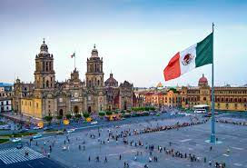

México
Es el décimo cuarto país más extenso del mundo,con una superficie cercana a los 2 millones de kilómetros cuadrados.Es el undécimo país más poblado del mundo, con una población de aproximadamente 118 millones de habitantes.La lengua materna es el español, que convive junto con 67 lenguas indígenas.
